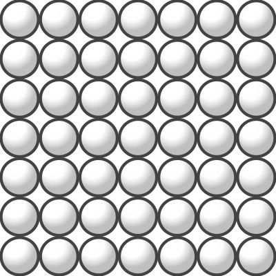

Problem
Determine the number of perfect squares less than \(10\,000\) that are divisible by \(392\).

Note: A perfect square is an integer that can be expressed as the product of two equal integers. For example, \(49\) is a perfect square since \(49 = 7\times 7 = 7^2\).
Solution
In order to understand the nature of perfect squares, let’s begin by examining the prime factorization of a few perfect squares.
From the example, \(49 = 7^2\). Also, \(36=6^2=(2\times 3)^2=2^2\times 3^2\), and \(144=12^2=(3\times 4)^2=3^2\times (2^2)^2=3^2\times 2^4\).
From the above examples, we note that, for each perfect square, the exponent on each of its prime factors is an even integer greater than \(0\). This is because a perfect square is created by multiplying an integer by itself, so all of the primes in the factorization of the integer will appear twice. Also, for any integer \(a\), if \(m\) is an even integer greater than or equal to zero, then \(a^m\) is a perfect square. This is because if \(m\) is an even integer greater than or equal to \(0\), then \(m=2n\) for some integer \(n\) greater than or equal to \(0\), and so \(a^m = a^{2n} = a^n \times a^n\), where \(a^n\) is an integer.
To summarize, a positive integer is a perfect square exactly when the exponent on each prime in its prime factorization is even.
The number \(392 =8 \times 49=2^3\times 7^2\). This is not a perfect square since the power \(2^3\) has an odd exponent. We require another factor of \(2\) to obtain a multiple of \(392\) that is a perfect square, namely \(2\times 392=784\). The number \(784=2^4\times 7^2=(2^2\times 7)^2=28^2\), and is the first perfect square less than \(10\,000\) that is divisible by \(392\).
To find all the perfect squares less than \(10\,000\) that are multiples of \(392\), we will multiply \(784\) by squares of positive integers, until we reach a product larger than \(10\,000\).
If we multiply \(784\) by \(2^2\), we obtain \(3136\) which is \(56^2\), a second perfect square less than \(10\,000\). If we multiply \(784\) by \(3^2\), we obtain \(7056\) which is \(84^2\), a third perfect square less than \(10\,000\).
If we multiply \(784\) by \(4^2\), we obtain \(12\,544\) which is a greater than \(10\,000\). No other perfect squares divisible by \(392\) exist that are less than \(10\,000\).
Therefore, there are \(3\) perfect squares less than \(10\,000\) that are divisible by \(392\).